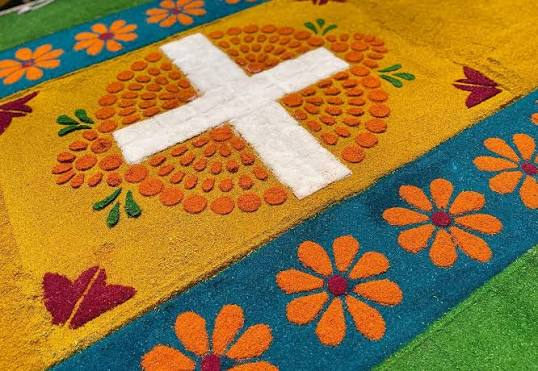

Alfombras
Se elaboran utilizando aserrín teñido con añelina de colores brillantes, sal, arena y moldes de madera. Las familias y comunidades trabajan durante horas diseñando minuciosamente pasajes bíblicos o patrones geométricos sobre las calles.

La Semana Santa en El Salvador se vive desde el ámbito religioso como una de las muestras de fe, solemnidad y sincretismo cultural más profundas de Centroamérica. Durante estos días, el país se paraliza para conmemorar la Pasión, Muerte y Resurrección de Cristo a través de rituales centenarios enraizados en la época colonial y la cosmovisión indígena.

Conoce las tradiciones y costumbres de unas de las celebraciones más representativas del país.
Se elaboran utilizando aserrín teñido con añelina de colores brillantes, sal, arena y moldes de madera. Las familias y comunidades trabajan durante horas diseñando minuciosamente pasajes bíblicos o patrones geométricos sobre las calles.

La gastronomía de la Semana Santa en El Salvador destaca por una profunda tradición donde los sabores dulces de la temporada veraniega y la abstinencia de carnes rojas definen el menú de los hogares salvadoreños. Los platillos e ingredientes más representativos se dividen en opciones saladas y los tradicionales dulces "en miel".

El Jueves Santo se conmemora con la devota visita a los siete templos y la nocturna Procesión del Silencio realizada en penumbra. El Viernes Santo las calles se llenan de color con alfombras de aserrín confeccionadas para el paso de la multitudinaria Procesión del Santo Entierro. El Sábado Santo se acompaña el luto de la Virgen por la tarde y se celebra la Resurrección por la noche durante la Vigilia Pascual.
La semana santa se celebra en muchos lugares del país pero en los lugares más destacados son :

La Semana Santa en el departamento de Sonsonate es considerada la máxima expresión de fe y tradición en El Salvador. Su majestuosidad, fervor popular y arraigo de más de un siglo hicieron que fuera declarada Patrimonio Cultural Religioso de El Salvador en 2013.
Ubicación: Departamento de Sonsonate
📍 Ver ubicación
La Semana Santa en Izalco es una de las celebraciones más místicas y antiguas de El Salvador. Su valor radica en el sincretismo cultural, donde las tradiciones católicas se fusionan con los ritos de las cofradías indígenas de ascendencia Pipil.
Ubicación: Izalco, departamento de Sonsonate
📍 Ver ubicación
La Semana Santa en la ciudad de Santa Ana destaca por su profundo fervor y el imponente marco arquitectónico de su icónico Centro Histórico. Las principales solemnidades son coordinadas por la majestuosa Catedral de la Santísima Trinidad (Catedral de Santa Ana).
Ubicación: Departamento de Santa Ana
📍 Ver ubicaciónElige el día del evento, selecciona una tour operadora, un guía o el transporte, indica el número de personas y agrega tu reserva al carrito.
Visita a los siete templos y Procesión del Silencio, ya de noche.
Recorrido guiado por los templos que se visitan en Jueves Santo, con regreso para ver la Procesión del Silencio.
$25 por persona
Acompañamiento durante la noche con explicación del significado de la procesión y los mejores puntos para verla.
$25 por grupo

Salida por la mañana y regreso en la noche, después de la procesión.
$12 por persona
Alfombras de aserrín en las calles y Procesión del Santo Entierro.
Recorrido por las calles para ver cómo se elaboran las alfombras y presenciar el paso de la procesión.
$30 por persona
Explicación de las cofradías pipiles y del sincretismo entre tradición católica e indígena.
$30 por grupo

Vehículo con conductor disponible durante el día para moverte entre los puntos de las procesiones.
$45 por vehículo
Acompañamiento a la Virgen por la tarde y Vigilia Pascual por la noche.
Degustación de los dulces típicos de la temporada en mercados y casas de tradición.
$20 por persona
Ideal para visitantes extranjeros. Explicaciones en dos idiomas sobre las celebraciones del Sábado Santo.
$45 por grupo
Viaje de ida y vuelta para acompañar las celebraciones de la tarde y la noche.
$10 por persona